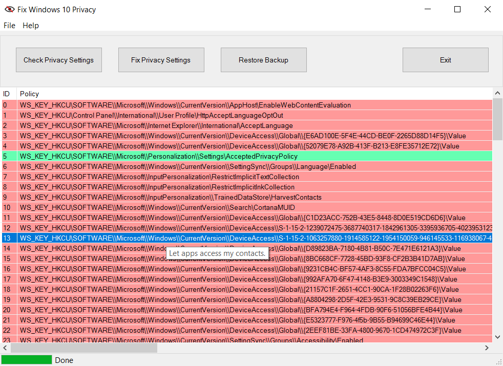

<!doctype html>
<html>
  <head>
    <meta charset="utf-8">
    <meta http-equiv="X-UA-Compatible" content="chrome=1">
    <title>fix-windows-privacy by modzero</title>

    <link rel="stylesheet" href="stylesheets/styles.css">
    <link rel="stylesheet" href="stylesheets/github-light.css">
    <meta name="viewport" content="width=device-width">
    <!--[if lt IE 9]>
    <script src="//html5shiv.googlecode.com/svn/trunk/html5.js"></script>
    <![endif]-->
  </head>
  
  <body>
    <div class="wrapper">
      <header>
        <h1>fix-windows-privacy</h1>
        <p>Fix Windows 10 Privacy</p>

        <p class="view"><a href="https://github.com/modzero/fix-windows-privacy">View the Project on GitHub <small>modzero/fix-windows-privacy</small></a></p>

        <ul>
          <li><a href="https://modzero.github.io/fix-windows-privacy/releases/fix-privacy-setup.msi">Download <strong>Installer</strong></a></li>
          <li><a href="https://github.com/modzero/fix-windows-privacy/zipball/master">Download <strong>Source.zip</strong></a></li>
          <li><a href="https://github.com/modzero/fix-windows-privacy">View On <strong>GitHub</strong></a></li>
        </ul>
      </header>
      <section>
        
        
        
     <p></p>

        <p><u>Eine Deutsche Version befindet sich weiter unten - German version below</u></p>

        <h2 id="english-version">English Version</h2>

        <h3 id="what">What &amp; Why?</h3>

        <p>
          
          <p>
            With the release of Microsoft's Windows 10 operating system, several innovations have been introduced to the market regarding the privacy settings. What is normality with Apple since long and apparently has been accepted by OSX users, now also became reality for Microsoft users: The analysis of use data and behavior by the US American creator of the software.
          </p>

          <p>
            Over time more and more users published instructions on how to break Microsoft's habit of spying on their users, including for private users whose computers are not part of a company or enterprise domain. I was annoyed that this leads to manually clicking checkmarks on a graphical user interface or running confusing PowerShell scripts and merge several single rule-sets. With the webpage <a href="https://fix10.isleaked.com/">https://fix10.isleaked.com/</a> I had the idea to build a tool, which is easily extendable and configurable and can automate the process of reaching an adequate level of privacy on the press of a button.
          </p>
          
          <p>
            <i>Fix Windows 10 Privacy</i> can be used via a GUI or the commandline. Right now it implements about 130 rules, which keep Windows 10 in check, regarding data protection.
          </p>
          
            <p>
            
            </p>

          <p>
            In particular, the new rules for enhanced privacy cover Windows 10 <b>Telemetry</b>: Microsoft collects <b>telemetry</b> data to identify security and reliablity issues and uses diagnostic data of the operating system to analyse and fix problems. However, data that is collected by Microsoft might probably also be used for future business cases. <b>Telemetry</b> data could contain senstive data and personally identifiable information. This is why several Windows Services are disabled by the privacy tools and policies are set, to deny the operating system to collect and send such data.
          </p>
          <p>
            Furthermore, several data leaks are plugged which allow third-party vendors or website owners to query sensitive information about the user. This includes but is not limited to several Web browser restrictions, to prohibit <b>telemetry</b> and &quot;more efficient advertisement&quot;.
          </p>
          <p>
            The settings for querying <b>geolocation data</b>, access to caller history information, microphone etc. are configured to allow access by default within the &quot;Privacy&quot;-settings interface. Access to this information is restricted by <i>Fix Windows Privacy</i> as well, and must explicitly be enabled by the user, if access shall be granted.
            </p>
           <p>
            Another breach of privacy that probably is not well known to most users is the storage of application data within the <b>OneDrive</b> Cloud of Microsoft or the usage of Microsofts AI assistant &quot;<b>Cortana</b>&quot;.
            <i>Fix Windows Privacy</i> denies automatic storage of application data such as browser profiles in the <b>OneDrive</b> cloud and disables <b>OneDrive</b> integration on the Windows 10 operating system. Whenever storage of data in the <b>OneDrive</b> cloud is desired, the user must enable <b>OneDrive</b> again.
            </p>
            <p>
            Several changes at the <b>Bitlocker</b> configuration are not as relevant from a data protection point of view, but nontheless important for general protection when using <b>Bitlocker</b> full disc encryption. This includes for example activating the Pre Boot Authentification, so the hard drive will not be decrypted before entering the passphrase and will not be decrypted automatically when a TPM chip is used. In the default configuration Microsoft only allows digits for the passphrase. <i>Fix Windows Privacy</i> changes the Windows config to enable complex passphrases as well.
            </p>
            <p>
            With this tool users have the possibility to check at any time (for example after updates) if any privacy relevant setting is still in the desired state. With another single click all such issues can be fixed again. The tool stores backups before each change to enable users to switch back to the previous state if something is not working as expected afterwards. The possibility to select and deselect single rules or groups of rules is a feature that is currently work in progress.
            </p>
            <p>
          The tool and all rules are open-sourced on <a href="https://modzero.github.io/fix-windows-privacy/">https://modzero.github.io/fix-windows-privacy/</a> and respectively <a href="https://github.com/modzero/fix-windows-privacy">https://github.com/modzero/fix-windows-privacy</a>. 
            </p>
            <p>
            In order to extend or modify the rules, all one has to do is to edit an XML file, in which all rules are defined. It is not possible to deselect any rules in the current release of the <i>Fix Windows 10 Privacy</i> Tool. An editor for selectiong rules to apply is planned for a future release.
            </p>
            <p>
            <b>OneDrive</b> Cloud users or users of others of the above mentioned features should refrain from using this tool at this time, because the functionality of these services will be limited or disabled after running it.
            </p>
                      
        </p>

        <h3 id="authors-and-contributors">Authors and Contributors</h3>

        <p><i>Fix Windows Privacy</i> has been initiated by Thorsten Schr&ouml;der (<a href="https://github.com/devio">on github</a>) of modzero in 2016.
        The software was inspired by the following websites:</p>

        <ul>
          <li><a href="https://fix10.isleaked.com/">https://fix10.isleaked.com/</a></li>
          <li><a href="http://www.c-amie.co.uk/technical/windows-10-registry-privacy-paths/">http://www.c-amie.co.uk/technical/windows-10-registry-privacy-paths/</a></li>
          <li><a href="https://www.windows-security.org/">https://www.windows-security.org/</a></li>
          <li><a href="https://community.spiceworks.com/topic/1751004-some-useful-windows-10-anniversary-registry-values">https://community.spiceworks.com/topic/1751004-some-useful-windows-10-anniversary-registry-values</a></li>
          <li><a href="http://www.zdnet.com/article/windows-10-telemetry-secrets/">http://www.zdnet.com/article/windows-10-telemetry-secrets/</a></li>
          <li><a href="https://www.microsoft.com/en-us/download/details.aspx?id=25250">Group Policy Settings Reference for Windows and Windows Server
</a></li>
        </ul>

        <p>The program icon was originally created by <a href="http://www.danilodemarco.com/">http://www.danilodemarco.com/</a> and modified by <a href="https://github.com/devio">Thorsten Schr&ouml;der</a>.</p>

        <h3 id="license">License</h3>

        <p><i>Fix Windows Privacy</i> is free and open source software. The software is published under the <a href="https://opensource.org/licenses/BSD-2-Clause">BSD 2-Clause License</a>.</p>

        <h3 id="download">Download</h3>

        <p>A signed installer can be downloaded from Github at <a href="https://modzero.github.io/fix-windows-privacy/releases/fix-privacy-setup.msi">https://modzero.github.io/fix-windows-privacy/releases/fix-privacy-setup.msi</a>. The installer and executable programs have been signed with the following certificate:</p>

        <div class="highlighter-rouge"><pre class="highlight"><code>Issued to: modzero GmbH
        Issued by: DigiCert EV Code Signing CA (SHA2)
        Expires:   Thu Oct 10 13:00:00 2019
        SHA1 hash: 9CA607786293B016FC148FC0F09C23CD89BEB2BD</code></pre></div>

        <h3 id="support-or-contact">Support or Contact</h3>

        <p>If you have trouble with using or deploying the software, please use the github platform and create issues or requests. To contact modzero, feel free to drop us an email at info ((at))  modzero [dot] ch or visit our website at <a href="http://www.modzero.ch">http://www.modzero.ch</a>.</p>

        <hr />

        <h2 id="deutsche-version">Deutsche Version</h2>

        <h3 id="was">Was und Warum?</h3>
        
        
        <p>
   
          <p>
            Mit der Ver&ouml;ffentlichung von Microsofts Windows 10 wurden auch einige Neuerungen bez&uuml;glich der Privatsph&auml;re-Einstellungen des Betriebssystems auf den Markt gebracht. Was bei Apple schon lange Normalit&auml;t ist und von OSX-Benutzern anscheinend akzeptiert wird, ist auch bei Microsoft Realit&auml;t geworden: das Auswerten von Daten und Nutzerverhalten durch den US-amerikanischen Hersteller der Software.

          </p>
          <p>
            Im Laufe der Zeit ver&ouml;ffentlichten mehr und mehr Benutzer Anleitungen, wie Microsoft das Ausschn&uuml;ffeln der Benutzer abgew&ouml;hnt werden kann, und zwar auch fuer Privatnutzer, deren Rechner nicht Teil einer Unternehmens-Dom&auml;ne sind. Mich hat daran nur gest&ouml;rt, dass es entweder darauf hinauslief, in einer grafischen Konfigurations-Oberfl&auml;che manuell Haken zu setzen oder auf un&uuml;bersichtliche PowerShell-Scripte zur&uuml;ckzugreifen und die einzelnen Konfigurationen zusammenzuf&uuml;hren. Mit der Website https://fix10.isleaked.com/ kam mir die Idee, ein Werkzeug zu bauen, welches sich schnell erweitern und konfigurieren l&auml;sst und das auf Knopfdruck oder automatisiert ein angemessenes Niveau an Privatsph&auml;re herstellt.
          </p>
          
          <p>
            <i>Fix Windows 10 Privacy</i> kann &uuml;ber eine grafische Oberfl&auml;che oder ein Konsolen-Programm genutzt werden. Es setzt derzeit etwa 130 Regeln um, die Windows 10 in Sachen Datenschutz in die Schranken weisen.
          </p>
          
          
          <p>
            
          </p>

          <p>
            Zu den neuen Schranken geh&ouml;rt insbesondere die Windows 10 <b>Telemetrie</b>:
            Microsoft sammelt Diagnose-Daten und Informationen &uuml;ber das Nutzerverhalten, um die eigenen Produkte verbessern zu k&ouml;nnen, im Zweifelsfall aber auch f&uuml;r sonstige wirtschaftliche Zwecke. Diese Daten k&ouml;nnen sensible Details enthalten, daher werden Windows-Dienste deaktiviert und Richtlinien gesetzt, die es dem Betriebssystem untersagen, diese Daten zu sammeln und an Microsoft zu senden.
          </p>
          <p>

            Als weiterer Schritt werden zahlreiche Datenlecks gestopft, die es den Herstellern von Software oder Betreibern von Webseiten erlauben, Informationen &uuml;ber den Benutzer zu erhalten. Hierzu geh&ouml;ren strengere Web-Browser-Restriktionen, um <b>Telemetrie</b> und effektivere Werbung zu verbieten. Die in den Privatsph&auml;re-Einstellungen per Default auf erlaubt gesetzten Konfigurationen f&uuml;r den Zugriff auf <b>Standortinformationen</b>, Anrufer-Historie, Mikrofon, etc. werden ebenfalls eingeschr&auml;nkt und m&uuml;ssen dann explizit freigegeben werden.
          </p>
          <p>
            Ein weiteres Datenleck, das den Nutzern oft zu wenig bekannt sein d&uuml;rfte, ist die Speicherung zahlreicher Daten in der <b>OneDrive</b> Cloud von Microsoft oder die Verwendung des KI-Assistenten <b>Cortana</b>. <i>Fix Windows Privacy</i> verbietet die automatische Speicherung von Anwendungsdaten wie Browser-Profilen in der Cloud und deaktiviert die <b>OneDrive</b>-Integration auf dem System, sodass die Speicherung von Daten in der Microsoft-Cloud nun explizit freigegeben werden muss.
          </p>
          <p>

            Aus Datenschutz-Sicht weniger relevant, jedoch f&uuml;r das allgemeine Schutzniveau bei Nutzung der <b>Bitlocker</b>-Festplattenverschl&uuml;sselung f&ouml;rderlich, sind zahlreiche &Auml;nderungen an der <b>Bitlocker</b>-Konfiguration. Hierzu geh&ouml;rt beispielsweise die Aktivierung einer Pre-Boot-Authentifizierung, sodass die Festplatte bis zur Eingabe der Passphrase verschl&uuml;sselt bleibt und bei der Verwendung von TPM-Chips nicht automatisch entsperrt wird. In der Standard-Einstellung erlaubt Microsoft f&uuml;r das Passwort lediglich Ziffern - <i>Fix Windows Privacy</i> passt die Windows Konfiguration so an, dass auch komplexere Passphrasen erlaubt werden.
          </p>
          <p>

            Benutzer haben mit dem Tool die M&ouml;glichkeit, jederzeit (zum Beispiel nach Updates) zu &uuml;berpr&uuml;fen, ob Datenschutz-relevante Einstellungen immer noch dem gew&uuml;nschten Zustand entsprechen. Mit einem weiteren Klick k&ouml;nnen die Probleme behoben werden. Vor jeder &Auml;nderung durch das Werkzeug werden Sicherungskopien der vorherigen Einstellungen gespeichert. Mit einem Klick auf &quot;Restore Backup&quot; kann ein Benutzer aus den zuvor erstellten Backups ausw&auml;hlen und dieses wieder herstellen. Das aus- oder abw&auml;hlen einzelner Regeln oder Gruppen ist ein Feature an dem zur Zeit gearbeitet wird. In einer der n&auml;chsten Releases wird es die M&ouml;glichkeit der Abwahl einzelner Regeln geben. 
          </p>
          <p>

            Das Werkzeug und alle Regeln sind als Open Source Projekt auf GitHub unter https://modzero.github.io/fix-windows-privacy/ bzw. https://github.com/modzero/fix-windows-privacy ver&ouml;ffentlicht.
          </p>
          <p>
            Zur Erweiterung oder &Auml;nderung der Regeln ist es lediglich notwendig, eine XML-Datei zu editieren, in der die Regeln definiert sind. In der jetzigen Version des <i>Fix Windows 10 Privacy</i> Tools ist es noch nicht m&ouml;glich, einzelne Regeln auszuschlie&szlig;en  ein Editor f&uuml;r die einzelnen Regeln ist f&uuml;r eine Folgeversion geplant.
          </p>
          <p>
            Nutzer der <b>OneDrive</b> Cloud oder anderer oben erw&auml;hnten Features, sollten derzeit von der Benutzung des Tools absehen, da die Funktionalit&auml;t dieser Dienste anschlie&szlig;end nicht oder nur eingeschr&auml;nkt zur Verf&uuml;gung stehen.
          </p>

        </p>

        <h3 id="autoren-und-quellen">Autoren und Quellen</h3>

        <p><i>Fix Windows Privacy</i> wurde 2016 von Thorsten Schr&ouml;der (<a href="https://github.com/devio">github</a>) von modzero ins Leben gerufen.</p>

        <p>Die Software wurde von den folgenden Webseiten inspiriert:</p>

        <ul>
          <li><a href="https://fix10.isleaked.com/">https://fix10.isleaked.com/</a></li>
          <li><a href="http://www.c-amie.co.uk/technical/windows-10-registry-privacy-paths/">http://www.c-amie.co.uk/technical/windows-10-registry-privacy-paths/</a></li>
          <li><a href="https://www.windows-security.org/">https://www.windows-security.org/</a></li>
          <li><a href="https://community.spiceworks.com/topic/1751004-some-useful-windows-10-anniversary-registry-values">https://community.spiceworks.com/topic/1751004-some-useful-windows-10-anniversary-registry-values</a></li>
          <li><a href="http://www.zdnet.com/article/windows-10-telemetry-secrets/">http://www.zdnet.com/article/windows-10-telemetry-secrets/</a></li>
          <li><a href="https://www.microsoft.com/en-us/download/details.aspx?id=25250">Group Policy Settings Reference for Windows and Windows Server
</a></li>
        </ul>

        <p>Das Programm-Icon wurde in der Original-Fassung von <a href="http://www.danilodemarco.com/">http://www.danilodemarco.com/</a> entworfen, und von <a href="https://github.com/devio">Thorsten Schr&ouml;der</a> modifiziert.</p>

        <h3 id="lizenz">Lizenz</h3>

        <p><i>Fix Windows Privacy</i> ist freie Open Source Software. Die Software wurde unter der <a href="https://opensource.org/licenses/BSD-2-Clause">BSD 2-Clause License</a> ver&ouml;ffentlicht.</p>

        <h3 id="download-1">Download</h3>

        <p>Ein signierter Installer kann von der Open Source Plattform Github herunter geladen werden: <a href="https://modzero.github.io/fix-windows-privacy/releases/fix-privacy-setup.msi">https://modzero.github.io/fix-windows-privacy/releases/fix-privacy-setup.msi</a>. Der Installer und die ausf&uuml;hrbaren Programme wurden mit folgendem Zertifikat signiert:</p>

        <div class="highlighter-rouge"><pre class="highlight"><code>Issued to: modzero GmbH
        Issued by: DigiCert EV Code Signing CA (SHA2)
        Expires:   Thu Oct 10 13:00:00 2019
        SHA1 hash: 9CA607786293B016FC148FC0F09C23CD89BEB2BD</code></pre></div>

        <h3 id="support-und-kontakt">Support und Kontakt</h3>

        <p>F&uuml;r Support-Anfragen und Problemen bei der Handhabung der Software benutzen Sie bitte die Github-Plattform um entsprechende Issues und Requests anzulegen. Um modzero zu kontaktieren, schicken Sie einfach eine Email an info ((at)) modzero [dot] ch oder besuchen Sie die Webseite <a href="http://www.modzero.ch">http://www.modzero.ch</a>.</p>

      </section>
      <footer>
        <p>This project is maintained by <a href="https://github.com/modzero">modzero</a></p>
        <p></p>
        <p><small>Hosted on GitHub Pages &mdash; Theme by <a href="https://github.com/orderedlist">orderedlist</a></small></p>
      </footer>
    </div>
    <script src="javascripts/scale.fix.js"></script>
    
  </body>
</html>
